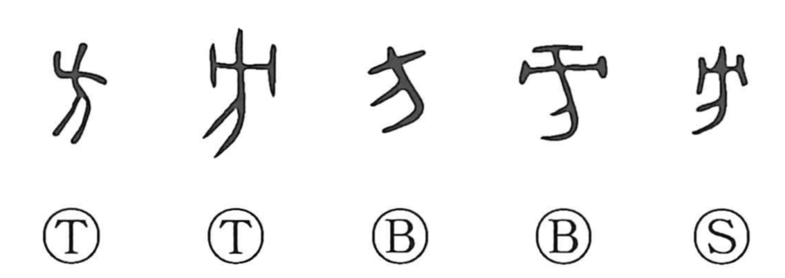

方

Kun: kata, masani | On: hou
direction ・ way ・ method
Explanation
方 depicts a corpse suspended from a crossbeam. Such a display served as a ritual barrier at a boundary, using the dead person's feared power to repel harmful beings. The setting is the edge of a community and the territory beyond it.
Oracle-bone inscriptions use 方 in names of external peoples and regions, such as 土方 and 馬方. From an outlying country or frontier come ‘distant region,’ ‘quarter,’ and ‘direction.’ A direction also supplies a course to follow, giving the later senses of a way, technique, or method.
放 adds the action of striking this suspended figure in a rite of expulsion. This connection helps explain the boundary image in 方.